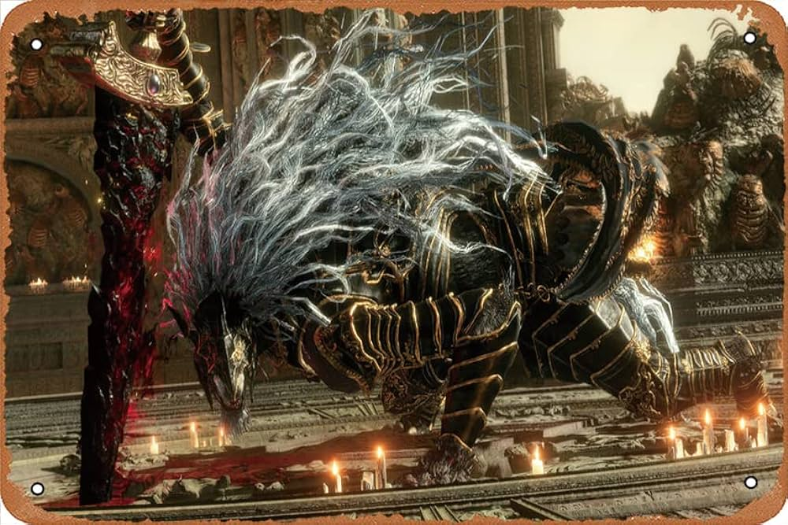
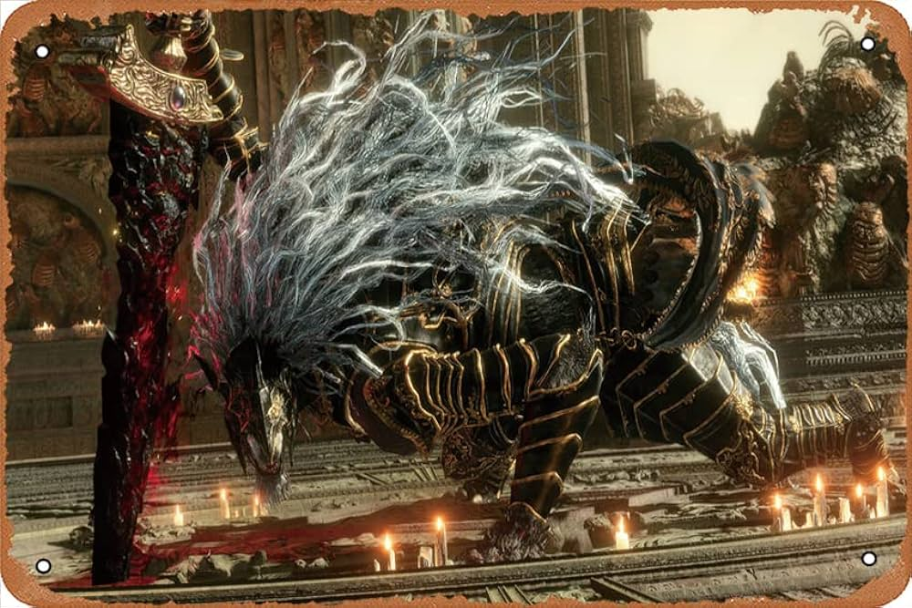

Descripción

"Elden Ring" se caracteriza por su dificultad y su enfoque en la exploración, el combate táctico y una narrativa rica y compleja. Los jugadores pueden enfrentarse a enemigos formidables, descubrir secretos ocultos y participar en batallas épicas contra jefes. El juego también presenta mecánicas de juego de rol, como la personalización del personaje y la progresión del personaje a medida que los jugadores adquieren nuevas habilidades y equipamiento..
Opinion personal sobre el Videojuego
No hay mucho que decir acerca de Elden Ring simplemente es probable que sea el mejor videojuego en toda la historia, lo tiene todo, gráficos impresionantes, una historia increíble, el mapa es de los más grandes creados, hay tantas cosas por hacer en elden ring que es casi imposible hacerlo todo. Y para no fallar cuenta con la que posiblemente sea el enemigo mas dificil de todos "Malenia", ese combate es tan dificil que le puede llevar dias a los jugadores para lograr vencerla, en conclusión GOTY.
 
